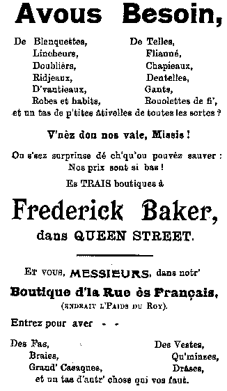

Dinmanche le 21 de Novembre et ch'ést auve plaisi que Clifford Laisney vos presente la Lettre Jerrsiaise.
Comme tchi qu'el peuplye d'Jerri peut etre ermerciant tchi i'a tant d'gens prêts a rendre service a lus ile. Oui, 19 candidats pour remplyi 6 positions comme Senateurs, des Etats, et achteu Dgieu sait combien d'candidats auve l'ambition d'representer lus paraisse comme Deputé.
I'a trejous ieu intêthét, sustout dans les paraisses de compagne quand v'nait les temps d'élections de chouaisi un candidat (normallement un homme), pour adji comme deputé. Dans l'temps passé quand l'Agricultuthe 'tait erconnue comme le principa môyen d'érvenu, ch'tait la couoteunme d'appointé un fermi értithé ou un moussieu d'bein pour remplyi la poste. Pas trejous une bouonne idée car souvent quou'aiqu' le candidat 'tait un homme de respect ch'tait étout un homme de silence, tch'in prennait part dans autchune débat. Comme le diton s'dit, I' r'garde et écoute sans rein dithe, 'I'n bouf ni baf'.
Mais comme le temps s'avanche, comme le temps change, En hardi d'cas les membres d's'Etats sonts des gens auve le filet bein pendu, tch'aiment a rabâchi en orde de faithe une impression. Quou'aiqu'q'ch'est necessaithe que Jerri suit l'temps et que nôt Assembliée es'sait une maison progressif, au même temps ch'est éspether que les nouvieaux élus authons l'bouon jugement d'considether les dêpens essentiel devant embèrtchi sus trop d'idées pompeuses. J'pouvons faithe de not mus d'assister au bein-etre de l'av'nin d'l'ile. Les candidats pour deputé onts fait d'lus possiblye de lus faithe connaitre a chatchun d'nous, j'avons ieu lus manifeste. Et d'même j'avons l'opportunité Mercredi de chutte semaine de montrer que j'sommes concernées et intéressis d'la manniethe que l'ile setha gouvernée comme j'entrons dans un nouvieau sieclye. Faites r'corder vôt vouaix et mettez vôt crouaix au coté du candidat d'vôt chouaix.
L'aute jour j'taits a chèrfouoilli parmi des papiers dans une tithette et j'vint a travers un p'tit livret, un programme de Pieches et recitations en jerriais publié dans l'année 1913. J'passi tchique temps a lièthe la poësie si bein écrite par les Messieurs E.J. Luce, Elie, et J.P, mais ch'nna tchi m'intèressi l'pus 'tait' liethe les announces des differents boutichiers tch'avaits contribuer envers l'eprimage du bulletin.
Chés announces sonts tellement intèressâtes que j'men vais vos en liethe tchique-uns.

'Missis, Avous besoin d'blanquettes, Lincheurs, Doubliers, Fliané, Chapieaux, Dentelles, Gants, Rouolettes a fi v'nez donc nos vai, Ou s'sez surprinse de ch'qu'ou pouvez sauver, Nos prix sonts si bas, Siez Frederick Baker, et pour vous Messieurs, dans not boutique dans La Rue des Français, Entrez pour des Fas, Braies, Grand Casaques, Vestes, Qu'minzes, Drases, et un tas d'autes choses tchi vos faut.
Une autre announce. Fum'ous, S'notch'ous, Avous besoin d'une pipe, Voulous un bieu chipaudé ?
Vende de p'tun, Cigares, Cigarettes, S'no, Allumettes, et chein tchi faut es Fumeurs et S'notcheurs, Allez siez
George de la Haye, 45 La Rue Drièthe.
Savous bein Missis, que pour aver vos mousses habillyis dans de tchi qui duth'tha et qui les gardetha confortablye et caud ch'est Au Gagne Petit tchi faut aller.
Casaques en serge pour les filles 3/6
Costumes en Drill d'éd'pis 6/6.
Corsets en Coton déd'pis 1/-
Cliques françaises avec des bonnets qui s'rabâttent.
Capes avec Bounnets—en trais couleurs
Et l'dernit pour aniet,
Les Bottes et Souliers qu'ou z'acatez siez William Ching sonts du Bouan et a Bouan marchi.
Pour les Mousses, les Päthents, pour Dehors et pardedans, allez siez William Ching 29 Broad Street, I s'en vont tchitter d'commerce. Ne v'la justement vôt chance, car touos les prixs ont 'tait reduits.
Prennez la premier Bus en orde d'aller en ville demain pour chertchi vos bargeins.
En finissant, n'oubliez pas que demain et Mardi dans la Salle Publique de St Martin sonts les deux sethées de l'Eisteddfod pour les classes Jerriaises. J'espethons d'vos i vaie en bouon nombre a supporter not ancienne langue et d'donner encouragement a tous tchi prendes part. Et n'oubliez pas etout l'importance de servi vôt vouaix Mercredi a l'Election.
A LA PRECHAINE
Clifford Laisney
Viyiz étout: